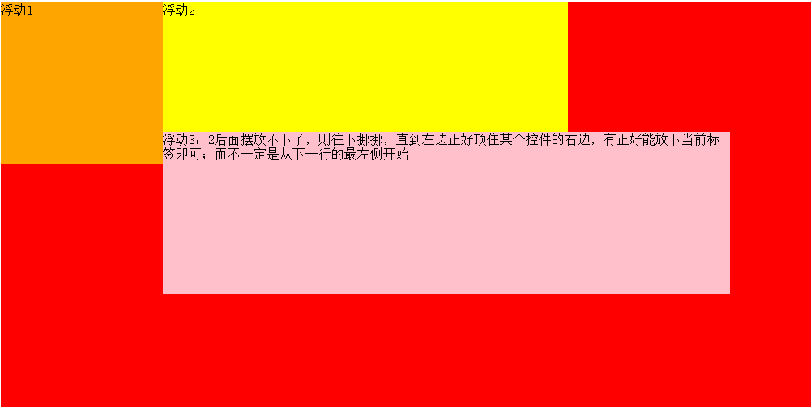

1：默认各个元素平铺在地面上；float可以在地面上再出现一层，用于铺放各个被float起来的元素；也就是说使用了float会有两个展示元素的平面，所有被float起来的元素都摆放在浮起来的那个平面，其它的都默认展示在地面
2：某一个元素float起来后不再占用父元素的空间，也就是说它下面也可以放置元素；
3：如果某个父元素的所有子元素都float了，且这个父元素没有宽高，则这个父元素此时也没有宽高,即包裹了空内容；
4：一个父元素有多个子元素，多个子元素float起来后，不可能突破父元素的padding或border,也就是说所有float起来的元素都在padding范围以内，不可能压着padding范围。
5：接着第4，如果多个float起来的元素总宽度大于父元素padding或border以内的宽值，则会导致float起来的后面的元素换行。
6:float起来的元素遮挡不住它下面元素的文字，下面的元素的文字会自动改变位置尽量显示出来;
7,类似第6，float起来的元素也遮挡不住它下面的图片，也就是说下面的图片不会填充该元素浮起来之前的位置。
8:float隐含可以吧块元素和行内元素转换为行内块元素，注意，只是让它们具有行内块元素的特性，而不是真的改变他们的display属性;
9：列表也可以用float,例如将ul下的li使用float实现水平菜单效果。
10：浮动元素的摆放规则：以全部float:left为例，想象冰块的浮动，假如重力向上，冰块从右往左浮动，也就是说每一行都是从左往右摆放标签，如果最后的标签摆放不下了，则向下稍微挪挪，直到左边正好顶住某个标签的右边，又正好能放下该控件即可。
